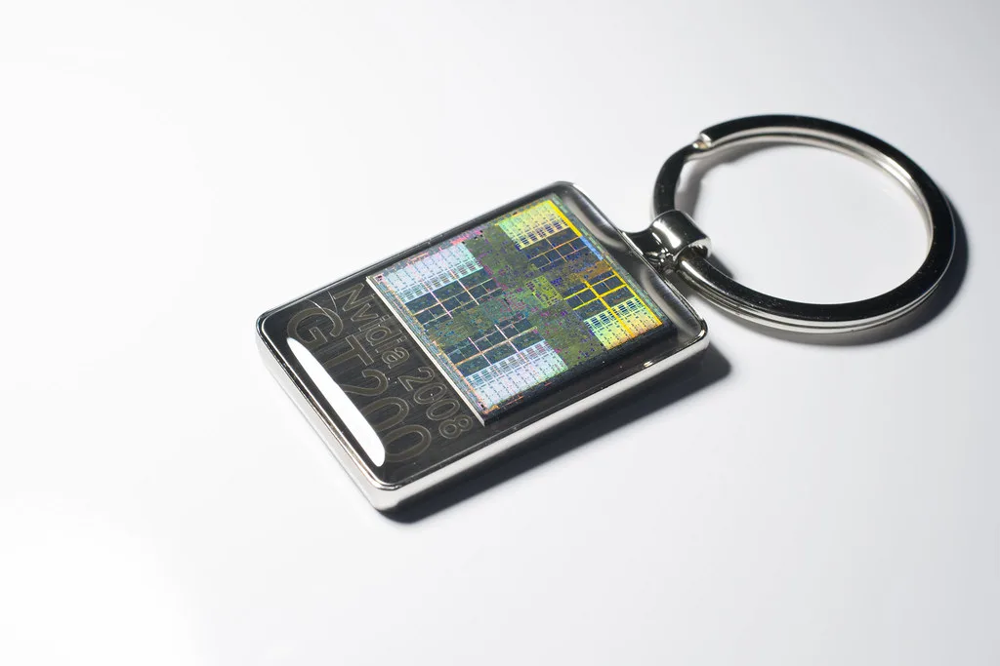
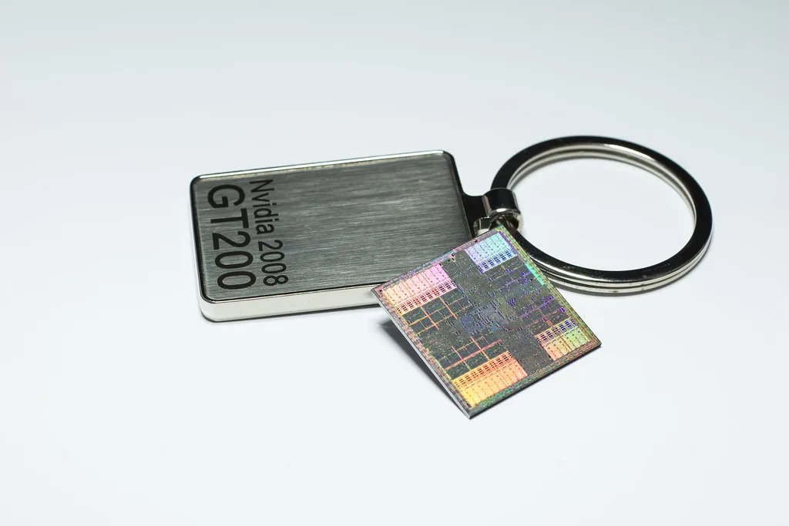

세계 최대 AI 반도체 기업 엔비디아의 공동창업자 젠슨 황이 최고경영자(CEO) 자리에서 물러난 지 11일 만에 다시 회사로 돌아온다. 외신에 따르면 엔비디아 이사회는 23일(현지시간) 황을 CEO로 복귀시키기로 만장일치로 의결했다. 이사회는 미국 정부 고위 관계자들의 의견을 들은 결과 그의 경영 복귀가 국가안보에 위험을 초래하지 않는다고 판단했다고 설명했다.
황은 지난 12일 즉시 사임한다고 발표해 시장에 큰 충격을 줬다. 회사는 당시 공식 발표문에 구체적인 사임 사유를 밝히지 않았다. 다만 현지 언론들은 그가 외국 정보기관과 연계됐다는 의심을 받는 인물과의 사적 관계, 사내 부적절한 관계 의혹 등에 시달려 왔다고 보도했다. 앞서 이사회는 8일 관련 보도를 계기로 독립 조사에 착수했다고 밝힌 바 있다.

사임 이후 엔비디아는 콜레트 크레스 최고재무책임자(CFO)가 임시 CEO를 맡는 체제로 운영돼 왔다. 사임 소식이 전해진 직후 주가는 개장 전 거래에서 두 자릿수 비율로 급락했고, 후임 선정 작업도 곧바로 시작됐다. 투자자들 사이에서는 창업자 없는 엔비디아에 대한 불안이 빠르게 번졌다. 이사회 의장은 17일 실적 발표 콘퍼런스콜에서 황을 복귀시킬 계획이 없다고 밝혔던 것으로 알려져, 결정이 불과 며칠 만에 뒤집힌 셈이 됐다.
번복 과정에서 가장 큰 관심을 받은 인물은 도널드 트럼프 미국 대통령이다. 트럼프 대통령은 미국 경제매체와의 전화 인터뷰에서 자신이 이사회를 설득해 복귀를 성사시켰다는 취지로 말했다. 또 황을 곁에 두는 것이 위협이 아니라 그를 잃는 것이 오히려 위협이라는 논리를 폈다. 블룸버그는 후임 후보로 거론되던 일부 인사가 고사한 점도 이사회 판단에 영향을 줬다고 전했다.
이 같은 발언은 미국 정치권에 거센 논란을 불러왔다. 민주당은 행정부와 민간기업 경영진 사이의 유착 가능성, 그리고 중국과 관련된 안보 우려를 들어 강하게 비판하고 있다. 공화당 일각에서도 대통령이 상장사의 경영진 선임에 관여한 모양새가 바람직하지 않다는 우려가 나온 것으로 전해졌다. 로이터는 행정부가 엔비디아에 복귀 이후에도 수출통제 규정을 철저히 지키라고 당부했다고 보도했다.

시장은 일단 환영하는 분위기다. 복귀 소식이 전해진 뒤 엔비디아 주가는 하루 사이 30% 안팎 치솟은 것으로 보도됐고, 한국과 일본 등 아시아 반도체주도 동반 급등했다. 30여 년간 회사를 이끌며 그래픽카드 업체를 AI 인프라의 핵심 기업으로 키운 창업자의 상징성이 그만큼 크다는 방증이다. 엔비디아는 AI 학습·추론용 GPU 시장에서 압도적인 점유율을 가진 기업이어서, CEO 거취가 곧바로 글로벌 기술주 흐름으로 이어지는 구조다. 다만 경영 공백 우려가 해소된 것과 별개로 지배구조에 대한 의문은 오히려 커졌다는 지적도 나온다.
풀어야 할 숙제도 여전히 많다. 다음 달로 예정된 미 의회 증언, 아직 끝나지 않은 이사회 독립 조사, 이사회 독립성 논란에 따른 법적 분쟁 가능성 등이 대표적이다. 임시 CEO를 비롯한 일부 경영진이 결정 과정에서 배제됐다는 보도까지 나와 내부 수습도 과제로 꼽힌다. 세계 AI 반도체 공급망을 좌우하는 기업인 만큼 향후 조사 결과와 의회 대응이 업계 전반에 미칠 파장에 관심이 쏠린다.